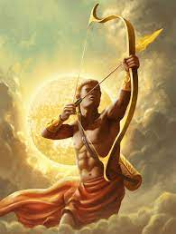

Un dieu, un prof!
Vous aurez plusieurs niveaux de difficultés:

le niveau facile contiendra une image et une explication du dieu.
le niveau intemédiaire n'aura pas d'image pour vous aider.
le niveau difficile contiendra que l'image du dieu.
le niveau impossible n'aura que le nom du dieu.